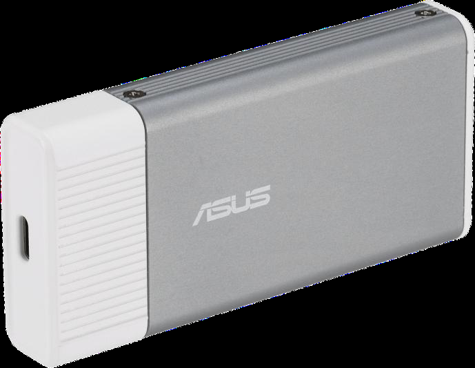
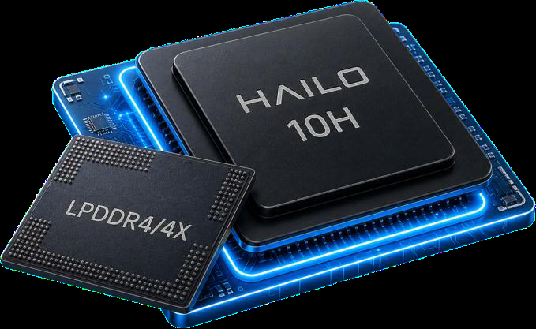
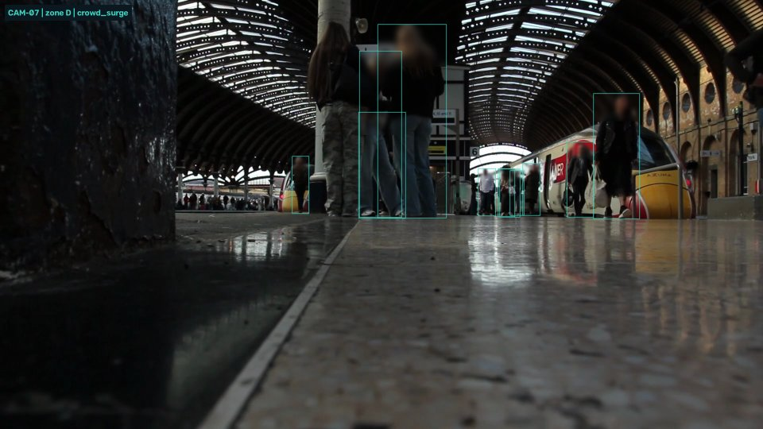
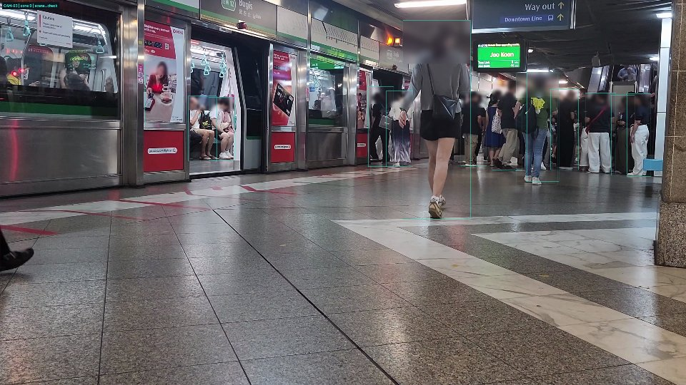
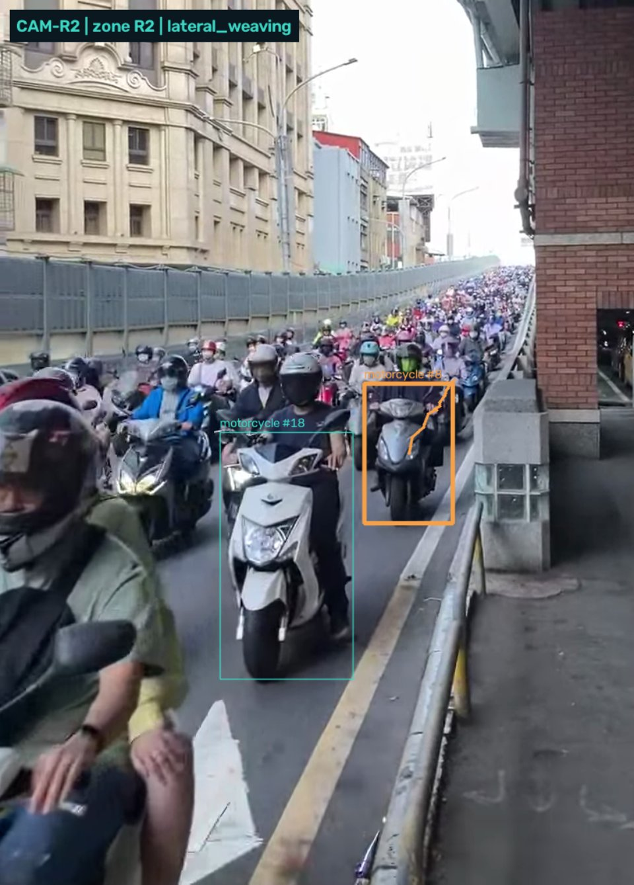
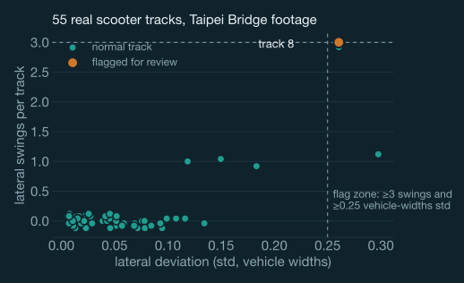
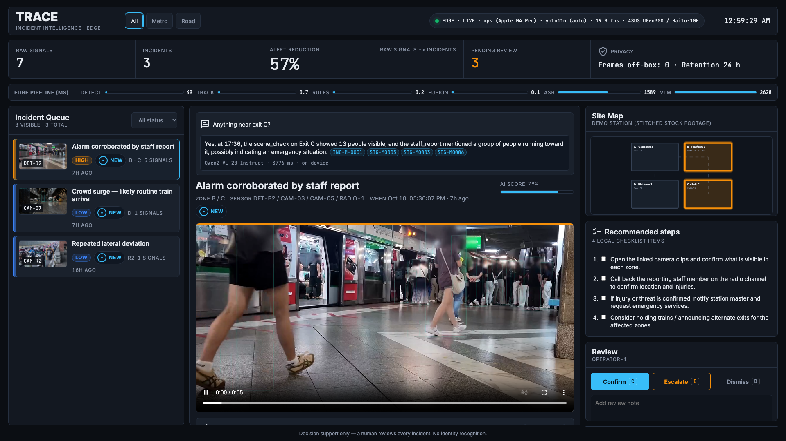
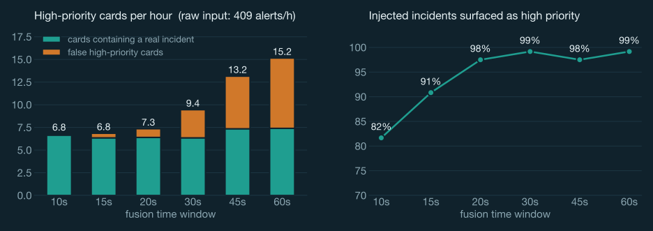

An edge copilot for the station duty officer: it fuses cameras, alarm panels and staff radio into evidence-linked incident cards, and wakes an on-device VLM only when a second opinion is needed.
At a busy station, a single officer watches camera walls, an alarm panel and a radio channel at once. Each system alerts on its own — nobody connects them.
trips per day across 118 stations
Phase I → Phase II (2027–28), with new automated alert types
During the attack on the Taipei Metro, 41 detector groups were activated across different zones. Operators had to reconstruct what was happening alarm by alarm. More sensors did not mean a clearer picture.
until a CCTV operator's attention falls below acceptable levels (U.S. NIJ study).
of alarm calls are false in classic alarm systems (U.S. POP Center guide).
is all that per-sensor de-duplication — what a typical VMS offers — removes in our alert-storm test.
Intercom on Platform 2 + radio: "people running toward exit C, someone may be injured" + 3 camera snapshots.
5 signals · 1 card · evidence linked
Crowd surge — likely routine train arrival
Traffic units review roadside video by hand. TRACE screens for observable risky motion and hands over a short, explainable clip.
~61% of H1-2025 deaths were motorcycle riders (831 of 1,368)
2024 → 2025 (deaths 11 → 19)
Camera evidence can show repeated lateral deviation or wrong-way travel. It cannot show intoxication — so TRACE never labels a rider, it queues a clip for a human.
It plugs into what a station already has — camera streams, the alarm panel's I/O, the radio channel — and outputs one reviewable incident per real-world event.
YOLO + ByteTrack on every camera; alarm I/O; Whisper on staff radio. Rules emit signals: crowd surge, person down, lateral weaving…
A zone graph groups signals that are close in time and space. Non-visual alarms pull camera snapshots on demand.
Only for fused incidents, Qwen2-VL wakes on the same chip and asks one targeted question (e.g. "is a train at the platform?").
Masked 6-s clip, timeline, transcript, every sentence cites its signal ID, plus a recommended checklist.
Confirm / escalate / dismiss in one key press. Every action — including the model's — lands in an audit log.
accelerator power, fanless
model families on one chip
cards vs raw alarms, 99% recall
raw frames sent off the box


| Role in TRACE | Model (Hailo zoo) | Hailo-10H perf. | Runs |
|---|---|---|---|
| Sense people & vehicles | YOLOv11n / YOLOv8s | 302 / 166 FPS | always |
| Listen to staff radio | Whisper-Base | 25 tok/s | on voice activity |
| Verify & describe scene | Qwen2-VL-2B | 7 tok/s · TTFT 1.0 s | per incident |
| Answer "ask the station" | Qwen2.5-1.5B | 7.4 tok/s | on demand |
The cheap detector runs on every frame; the expensive models wake only on events. All HEFs share one VDevice(group_id="TRACE"), so HailoRT time-slices them on a single chip — no GPU, no server rack, no video leaving the station.
Each site is a graph of zones (concourse, platform, exits). A signal joins an open incident if it is within 30 s of its last signal and within 1 hop of the zone where the incident started. Anchoring plus a 180 s cap stops noise from chaining a whole station into one blob.
When a non-visual alarm fires (intercom, radio), TRACE snapshots cameras in the same and adjacent zones at that moment — context for the officer, never counted as corroboration.
A confident staff radio report plus any independent machine sensor is always high priority.

crowd_surge · people 7 → 11 within 6 s
Q: Is a train stopped at the platform with passengers getting on or off?
"VLM_ANSWER"
Retitled "Crowd surge — likely routine train arrival", kept at low priority, reason written to the audit log.
Guardrail: the VLM may only downgrade camera-only incidents. It can never override an alarm or a human report — the officer can always override it.
1 Open linked clips · 2 Call back the reporting staff · 3 If injury confirmed, notify station master & emergency services · 4 Consider holding trains / alternate exits

Whisper routes by the last place mentioned — the caller stands on Platform 2 but reports exit C, so the signal lands in zone C, adjacent to the alarm. Radio audio is transcribed on-box and discarded.

Per track: project motion onto the local flow, remove lane curvature with a quadratic fit, and measure the residual in vehicle widths — scale-free across camera heights. Count lateral swings with hysteresis.


"Anything near exit C?" → on-device LLM answers from the event log only, with clickable citations.
Every sentence of the summary cites a signal ID.
C / E / D to confirm, escalate, dismiss; audited.
"Frames off-box: 0 · retention 24 h".

Synthetic stress test, 20 seeds: 16-zone station, 32 cameras, 16 detectors, 4 radios; 1 h of nuisance alarms (6/min) + 6 injected multi-zone incidents.
| Per hour | Cards | Recall |
|---|---|---|
| Every alarm is a card | 409 | 100% |
| Per-sensor de-dup (VMS-style) | 373 | 100% |
| TRACE high priority | 9.4 | 99% |
glance at every alarm (15 s each)
TRACE: 60 s per high + 15 s per medium card
At a 30 s window: 3.1 false high cards/h. A 20 s window trades 1% recall for 1 false card/h — tunable per site.
| Stage | Prototype (measured) | UGen300 (planning) |
|---|---|---|
| YOLO11n detect, 960 px | MS_DETECT ms / frame | ~3.3 ms (302 FPS) |
| ByteTrack + rules (host) | MS_TRACK ms / frame | same host code |
| Fusion (host) | MS_FUSION ms / run | same host code |
| Whisper, 8.7 s radio call | MS_ASR ms | Whisper-Base 25 tok/s |
| Qwen2-VL-2B, verify + describe | MS_VLM ms / incident | TTFT 1.0 s · 7 tok/s |
Prototype: DEVICE_NAME, PyTorch MPS, unoptimised. UGen300 column: Hailo Model Zoo figures (PCIe); USB numbers are the first Stage II measurement.
120 detections/s → 40% of YOLOv11n capacity on the Hailo-10H; Whisper and the VLM fill gaps only on events (~1 incident/min at peak → VLM busy < 20% of the time).
No face recognition, no cross-camera re-identification. Head regions are blurred in every stored frame before it is written.
Video and radio audio are processed in memory; only masked 6-s clips attached to incidents are kept (24 h default) and only metadata is sent upstream.
The VLM may only downgrade camera-only incidents; every model verdict and human decision is in the audit log.
Prompts forbid guessing identity, emotion or intent; road flags describe motion only and always go to human review.
Short or occluded tracks can't support a conclusion; a crowd surge without context stays low; thresholds are site-calibrated, not universal.
Purpose-bound processing, data minimisation and retention limits are defaults, not options.
| Per camera, per month | Cloud analytics | TRACE edge |
|---|---|---|
| Uplink (1080p H.264 ≈ 4 Mbps) | ≈ 1,296 GB | < 0.1 GB metadata |
| Ingest (AWS Kinesis Video, $0.0085/GB) | ≈ US$11 | — |
| Analysis (Rekognition streaming events, $0.00817/min) | ≈ US$353 | — |
| Accelerator energy (2.5 W ÷ 8 cameras) | — | ≈ 0.23 kWh |
| Raw video off-site | yes | no |
less upstream bandwidth: events, not video.
fanless accelerator; fits in an existing equipment cabinet or NVR.
Also works when the network is down — exactly when incidents happen.
by 2028, 22.3% CAGR (MarketsandMarkets)
Taipei Metro alone is adding 2,901 AI cameras across 31 stations; Taichung runs ~32,000 public cameras (≈80% outdated), Tainan 19,443.
| Model | How |
|---|---|
| Edge box | Host + UGen300 sold through system integrators / ASUS IoT channel |
| Software licence | Annual, per camera; includes rule packs (metro, road, campus, factory) |
| Pilot | Paid 8-week pilot: one station, KPI = officer minutes per verified incident |
| Expansion | Other rail & bus operators, city traffic units, campuses, logistics sites |
Buyer: the operator who owns the incident-response workflow. TRACE complements their VMS and AI cameras via webhook/JSON — no rip-and-replace.
| Product | What it does | Where it runs | Speech | VLM verify |
|---|---|---|---|---|
| Genetec Mission Control | Correlates alarms into incidents with procedures | Server / VMS | — | — |
| ZeroEyes (e.g. SEPTA) | Gun detection, human-verified alerts | Cloud ops centre | — | human |
| Acusensus Heads-Up | Flags possibly impaired drivers for officers | Roadside system | — | — |
| Milestone Hafnia (2025 hackathon) | VLM adds context to edge events | Cloud VLM | — | ✓ |
| TRACE | Fuses camera + alarm + radio, verifies with a VLM, evidence-linked cards | 2.5 W on-site | ✓ | ✓ |
The gap is the combination: multi-source fusion + speech + VLM verification, running offline on one low-power accelerator next to the cameras.
YOLOv8s/11n, Whisper-Base, Qwen2-VL-2B on one shared VDevice; measure USB FPS, latency, watts.
2–4 RTSP cameras + GPIO "alarm" + live radio mic; end-to-end alarm-to-card latency.
Label ~200 public road clips; per-camera thresholds; VLM second-opinion precision.
5 participants triage a replayed alarm hour with vs without TRACE; README, model card, benchmarks.
≥ 8 cameras @ 15 fps on one UGen300
Alarm → card < 2 s; VLM verdict < 5 s
≥ 90% incident recall at ≤ 2 false high cards/h
Triage time −50% in the operator study
Main risks → mitigation: USB throughput lower than PCIe → YOLOv11n + lower fps on static cameras · VLM latency → only per incident, async · few real incidents → replayed public datasets + staged tabletop scenes · Mandarin radio → Whisper-Small + keyword lexicon.
Wei-Lun (Alen) Hsiao
B13902049 · CSIE, National Taiwan University
Battlefield Lightning · ASUS UGen300
Workplace AI (station & traffic operations)
GITHUB_URL
VIDEO_URL
Full references and media credits in the appendix. All footage is openly licensed stock/public-domain material; no real incident footage is used. Development assisted by AI coding tools (Claude Code, OpenAI Codex).
[1] Taipei Metro, response to the Dec 19, 2025 attack (detector groups activated). metro.taipei/News_Content.aspx?n=30CCEFD2A45592BF&s=0CD8D89566708BD0
[2] Taiwan News, "Taipei Metro AI camera rollout", 2026-08-21. taiwannews.com.tw/en/news/6425898
[3] Taipei Metro — ridership 2025 (767M trips, 2.10M/day, 118 stations). en.wikipedia.org/wiki/Taipei_Metro
[4] UDN, 2025 road deaths (2,858), 2026-03-12. udn.com/news/story/7266/9375833
[5] LTN, H1-2025 road deaths and motorcycle share, 2025-09-16. news.ltn.com.tw/news/politics/breakingnews/5180212
[6] TVBS Cars (NPA data), drug-driving major crashes 2024–2025, 2026-06-04. cars.tvbs.com.tw/life/324937
[7] Green, M. W., The Appropriate and Effective Use of Security Technologies in U.S. Schools, NIJ NCJ 178265, 1999.
[8] Sampson, R., False Burglar Alarms, POP Center Guide No. 5, 2nd ed., 2007. popcenter.asu.edu/node/3441
[9] ASUS UGen300 USB AI Accelerator press release, 2026-04-01; ASUS UGen Series Sales Kit, 2026-09-17.
[10] Hailo Model Zoo v5.4, HAILO10H object detection benchmarks. github.com/hailo-ai/hailo_model_zoo
[11] Hailo GenAI Model Zoo (HailoRT 5.4): Qwen2-VL-2B, Qwen2.5-1.5B, Whisper. github.com/hailo-ai/hailo_model_zoo_genai
[12] hailo-ai/hailo-apps — simple_vlm_chat, simple_whisper_chat (API reference). github.com/hailo-ai/hailo-apps
[13] AWS Kinesis Video Streams pricing; Amazon Rekognition pricing (accessed 2026-10-10).
[14] Nelly's Security, camera bitrate guide, 2026-04-17.
[15] MarketsandMarkets, Video Analytics Market (US$22.6B by 2028, 22.3% CAGR).
[16] UDN 2026-04-29 (Taichung cameras); CTEE 2026-06-01 (Tainan cameras).
[17] Road Safety GB, Acusensus trial in Devon & Cornwall, 2025-01-29; Vision Zero South West.
[18] Route Fifty, "Transit agency pilots gun detection tech" (ZeroEyes, SEPTA), 2022-12-02.
[19] Genetec Mission Control, key features and benefits.
[20] Milestone Systems, Hafnia Hackathon 2025 winners press release.
[21] Wang, Y. et al., Qwen2-VL, 2024; Radford, A. et al., Whisper, 2022; Zhang, Y. et al., ByteTrack, ECCV 2022; Ultralytics YOLO11, 2024.
[22] Taiwan Personal Data Protection Act (PDPA).
| Asset | Author / source | License | Used for |
|---|---|---|---|
| Platform 1 & 2, MRT Taipei Main Station (2026) | Bigmorr, Wikimedia Commons | CC BY-SA 4.0 | pp. 1, 20 |
| People at Bannan Line Platform (2010) | Bernard McManus, Wikimedia Commons | CC BY 2.0 | p. 2 |
| Motorcycle waterfall on Taipei Bridge 05/06/07 (2023) | Tze Chiang Hao, Wikimedia Commons | CC BY-SA 4.0 | p. 4, road scenario video |
| Station clips 37737804, 34647618, 35767994, 25786069 | Pexels contributors | Pexels License | metro scenario video |
| Motorcycles traffic in the city (Taiwan) 4740223 | Allen Low, Pexels | Pexels License | road scenario video |
| UGen300 and Hailo-10H product renders | ASUS UGen Series Sales Kit | contest material | p. 6 |
| Radio call audio | Synthesised (neural TTS) + band-pass "radio" filter | generated | metro scenario |
What is real and what is staged. Detection, tracking, rule signals, Whisper transcription, fusion, VLM verdicts, evidence clips and all timings are real outputs of the prototype in the GitHub repository. The metro "station" is stitched from stock clips of different stations; the detector alarm and the radio call are scripted inputs. The alert-storm benchmark uses synthetic alarms. No footage of real incidents is used.